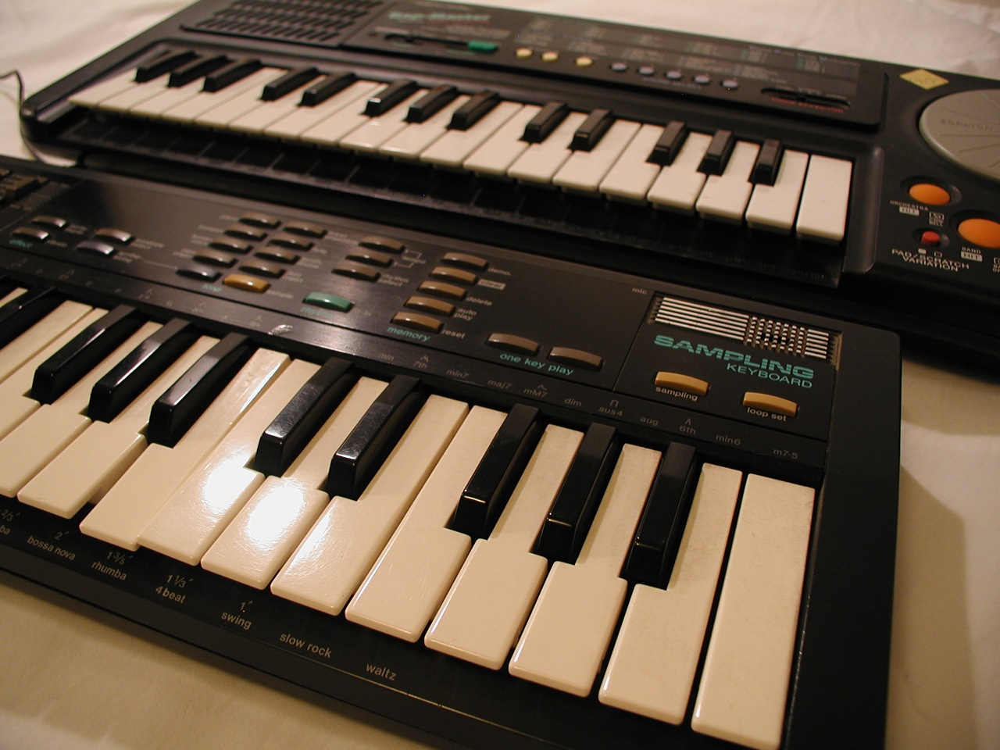

Casio SK-1 Sampling Keyboard
One button. Any sound. Now play it.

Overview
The Casio SK-1, released in 1985 for $99.95, was a miniature sampling keyboard that democratized digital audio sampling for consumers. Its defining interaction was breathtakingly simple: slide a switch to sampling mode, hold one button, make a sound into the built-in microphone, release — and the captured sound is now mapped across 32 miniature piano keys, playable chromatically. At 8-bit PCM, 9.38 kHz sample rate, and 1.4 seconds of memory, the fidelity was lo-fi by design, but the interaction model was revolutionary: any sound in the world could become a musical instrument with one gesture. The SK-1 also became the most famous circuit-bending platform in history — its exposed PCB traces made it trivially modifiable by touching bare fingers to the board, spawning an entire subculture of hardware hacking.
Deep dive
The SK-1's sampling workflow is the essence of accessibility in hardware design. There is no menu, no file system, no waveform display, no editing. The user slides a switch to 'Record,' holds the sampling button, makes a sound (speaking, singing, tapping, or using the line-in jack), and releases. The captured 1.4-second sample is immediately assigned to the keyboard — press any of the 32 mini keys and the sound plays back at the corresponding pitch. In an era when professional samplers cost $10,000+ and required manual reading, the SK-1 reduced the act of sampling to a single physical gesture. This interaction model — point, press, play — anticipated the one-touch capture paradigm of smartphone cameras and voice memos by decades.
The SK-1 achieved its most famous legacy through an unintended interaction: circuit bending. Reed Ghazala, the father of circuit bending, published the first guide to modifying the SK-1 in Experimental Musical Instruments magazine in the early 1990s, but Keyboard Magazine had already published MIDI modification instructions in 1987. The SK-1's exposed PCB traces — a consequence of its low-cost construction, not a design feature — meant that touching different points on the board with bare fingers would create short circuits that produced unexpected, glitchy sounds. Users discovered that bridging specific solder points with wires, resistors, or their own skin turned the SK-1 into a completely new instrument, capable of sounds its designers never imagined. This accidental interface — the hand on the naked circuit board — created an entire subculture of hardware hacking that continues today.
Beyond sampling, the SK-1 was an unusually capable synthesizer for its price. It included 4-note polyphony, 13 preset amplitude envelopes, portamento (glide between notes), vibrato, a rudimentary step sequencer, preset rhythms, and chord accompaniment. An additive synthesis mode allowed users to build custom timbres from harmonic partials. The built-in speaker and line-out jack made it both a self-contained instrument and a studio tool. The 'Demo' button played the Toy Symphony — the factory-programmed showcase piece. The RadioShack rebranded version was sold as the Realistic Concertmate 500.
The SK-1 was used by a remarkable range of artists: Autechre used it in their earliest recordings; Blur's Damon Albarn played it on 'Advert' from Modern Life Is Rubbish; jungle pioneer DJ Hype used it for seminal productions; Large Professor sampled with it in early beat-making; Mount Eerie's Eleven Old Songs used only SK-1 and voice; composer Samuel Andreyev wrote demanding chamber music parts for it. Soccer Mommy's 2017 album Collection features an SK-1 on the cover. The SK-1 represents a rare convergence: a mass-market consumer product that became a professional tool, a hacker platform, and a cultural icon — all because of an interaction model that reduced sampling to one button press.
Team & pioneers
- Casio Computer Co., Ltd.. Japanese electronics manufacturer; designed and manufactured the SK-1
- RadioShack (Tandy Corporation). North American distributor; sold rebranded version as Realistic Concertmate 500
- Reed Ghazala. Father of circuit bending; published the first SK-1 bending guide in Experimental Musical Instruments magazine
Media
